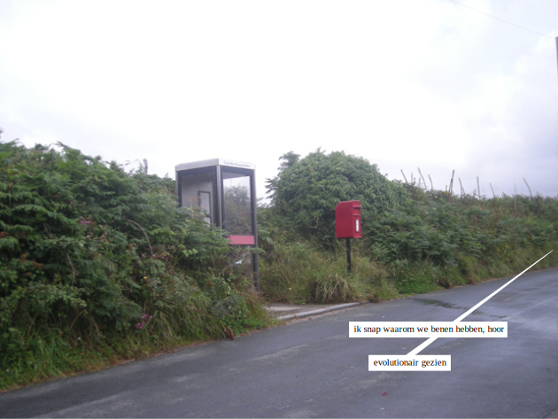
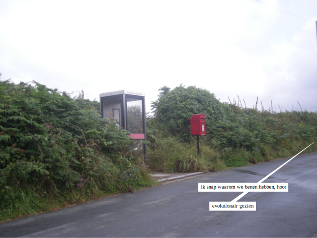
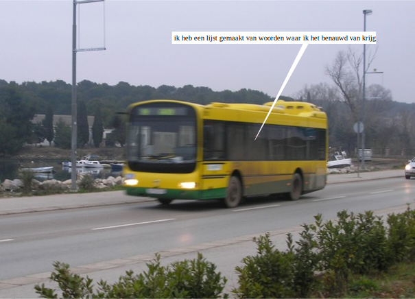
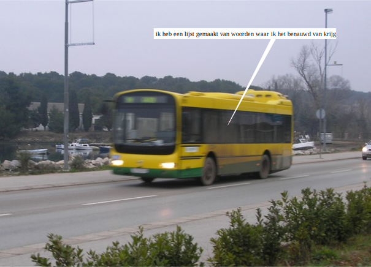

 

De wolken waren mooi,
maar je deed iets met je schoen.
Met losse veters stak je over,
bij een stoplicht ging je zitten.
Toen je alle stickers had bekeken,
ging je liggen op je rug.
Op ons kruispunt zonder auto’s
was het stil en werd het donker.
Ik vroeg je waar je aan moest denken.
Je zei dat je had gedroomd
dat je zonder kleren in alle velden van de wereld lag,
en dat dit net zo voelde.
Ik vroeg of we nu in alle steden van de wereld waren.
Je zei, ‘Alle steden waar ze slapen.’